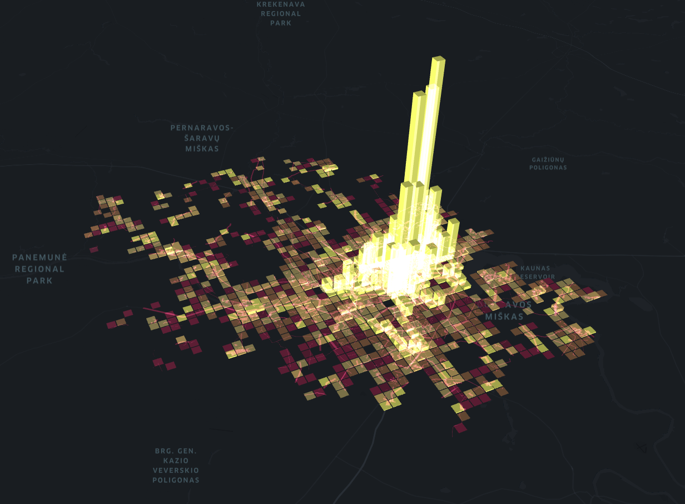
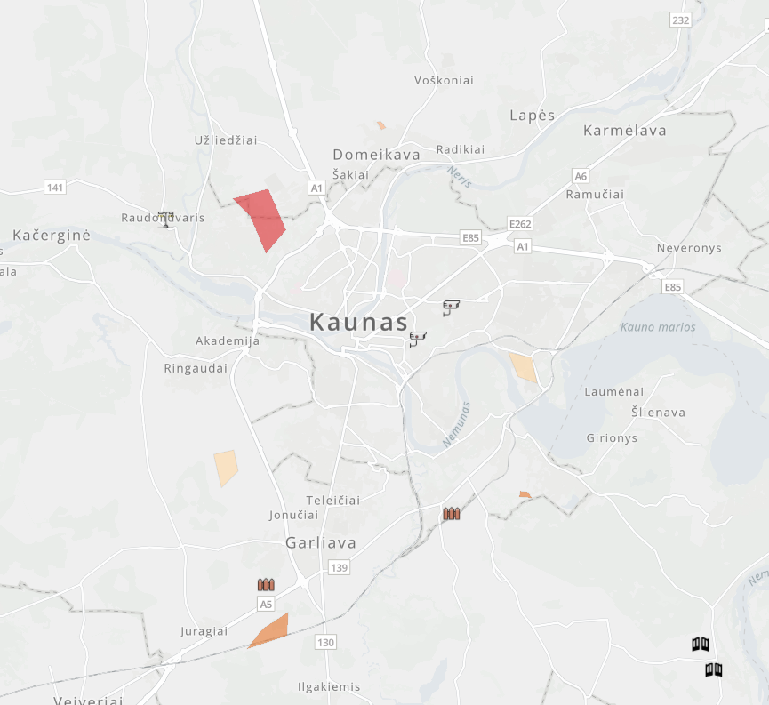

Interaktyvi nusikalstamumo, rizikos zonų ir gyventojų pasiūlymų analizės platforma.
Peržiūrėti žemėlapiusProjektas skirtas Kauno miesto saugumo infrastruktūros analizei, nusikalstamumo rizikos vertinimui bei gyventojų įtraukimui į saugesnės miesto aplinkos kūrimą.
Platformoje pateikiami interaktyvūs žemėlapiai, pavojingų zonų analizė bei gyventojų pasiūlymai dėl vartų, tvorų, apšvietimo ir stebėjimo kamerų įrengimo.
Tai demonstracinė svetainė, visas joje pateikiamas turinys yra skirtas mokymo tikslams.
Kriminalinių įvykių ir rizikos teritorijų analizė.
Potencialiai nesaugios miesto vietos ir jų vertinimas.
Survey123 platformoje pateikti gyventojų pasiūlymai.
Vartai, tvoros, apšvietimas ir vaizdo stebėjimas.
Interaktyvus žemėlapis vaizduojantis nusikalstamumo pasiskirstymą Kauno mieste.
Atidaryti žemėlapį
Pateikite savo pasiūlymą dėl saugumo infrastruktūros gerinimo.
Pateikti pasiūlymą